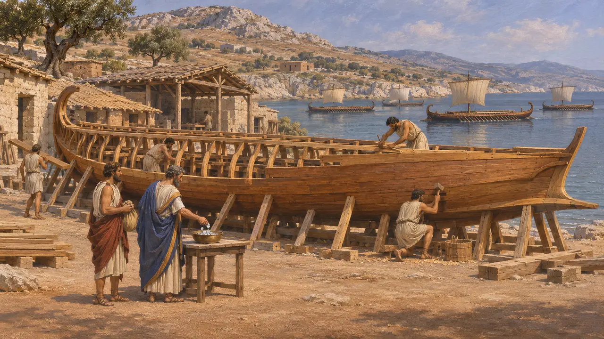
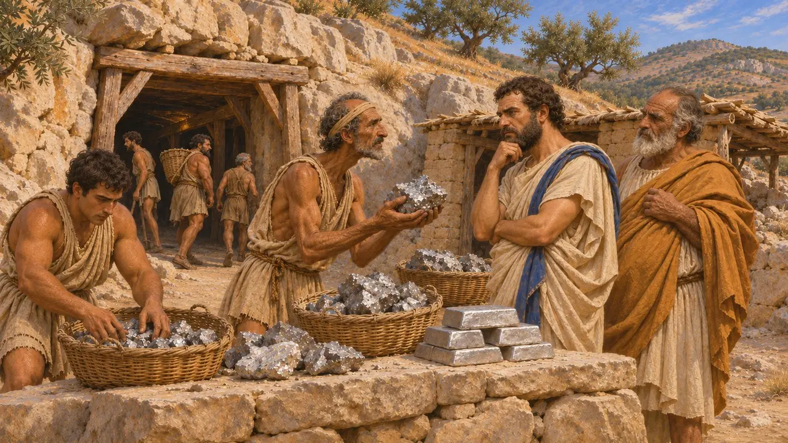
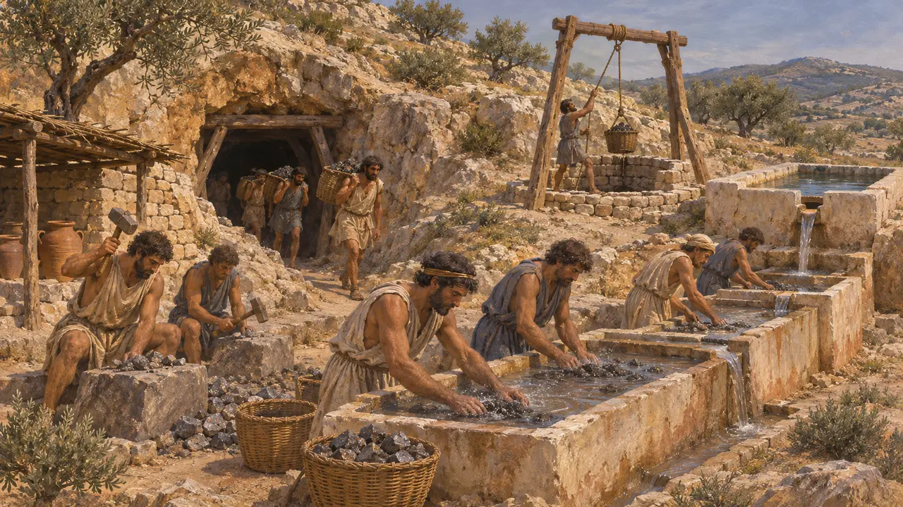
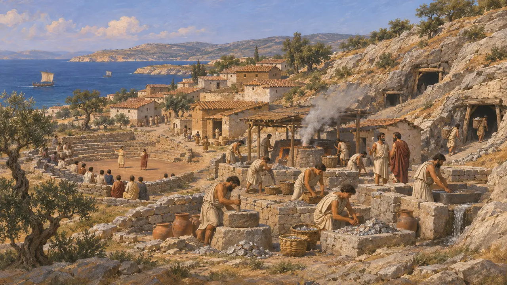

Laurio
Le miniere d'argento dell'Attica meridionale che pagarono la flotta di Atene, 483-480 a.C.
Il Laurio è il distretto collinare dell'Attica sud-orientale, ricco di minerale di piombo e d'argento. Nel 483 a.C. vi fu trovato un nuovo filone, e Temistocle convinse gli Ateniesi a spendere l'argento in navi invece di spartirlo. Quelle navi combatterono all'Artemisio e a Salamina.
Nel gioco: Il Laurio è nominato nelle note del partner commerciale ateniese dei livelli di Maratona e delle Termopili e nei testi di Temistocle, come l'argento che costruì la flotta.

Le navi di Temistocle
Racconto anticoErodoto dice che gli Ateniesi avevano nel tesoro una grossa somma dalle miniere del Laurio e intendevano spartirla a dieci dracme a testa. Temistocle li convinse a costruire invece duecento navi per la guerra con Egina, e furono queste le navi che salvarono la Grecia.
Herodotus 7.144

Il filone di Maronea
Racconto anticoLa Costituzione degli Ateniesi aristotelica data la scoperta all'arcontato di Nicodemo, 483 a.C./2, a Maronea, con cento talenti di profitto. Dice che Temistocle fece costruire una trireme a ciascuno di cento uomini ricchi. Le cifre differiscono da quelle di Erodoto, ma entrambi fanno pagare la flotta all'argento.
Athenaion Politeia 22.7

Miniere e schiavi
Nelle fontiPozzi, gallerie, laverie del minerale e cisterne si conservano in tutto il distretto, per lo più del V e IV secolo. Il lavoro era svolto soprattutto da schiavi, molte migliaia alla fine del V secolo. Con questo argento si coniavano le civette di Atene.
Excavations at Thorikos and Laurium; Xenophon, Ways and Means 4

Torico
Nelle fontiLa città mineraria di Torico, sulla costa vicino al Laurio, ha un teatro antico e case e officine per la lavorazione del minerale. I suoi reperti mostrano un'attività estrattiva molto anteriore alle guerre persiane, sicché la scoperta del 483 a.C. fu un nuovo ricco filone, non il primo argento.
Belgian excavations at Thorikos
Fonti
- Herodotus 7.144
- Athenaion Politeia 22.7
- Xenophon, Ways and Means 4